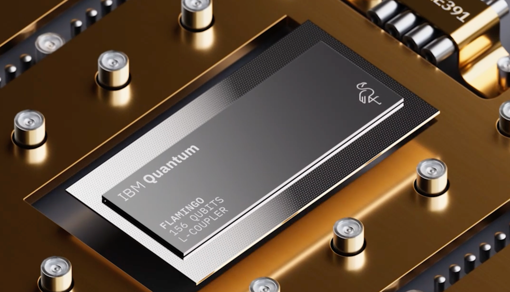

Quantum Leap: IBM Announces Breakthrough in Quantum Chip Stability

IBM has unveiled a quantum processor capable of sustaining coherence for 10x longer than previous generations. This milestone marks a significant step toward practical quantum computing and could revolutionize industries like cryptography, drug discovery, and logistics.
About Us
Welcome to TechPulse — your daily heartbeat in the world of technology.
At TechPulse, we believe that technology shapes the future — and staying informed is the first step to understanding it.
Founded by a group of developers, designers, and digital storytellers, our mission is to deliver tech news that’s accurate,
accessible, and engaging.
We cover everything from AI breakthroughs and startup launches to product reviews and policy debates — all curated with clarity and insight.
Whether you're a tech enthusiast, a curious learner, or an industry pro, our goal is to keep you ahead of the curve.
Our content is independent, research-driven, and powered by a global network of contributors who are as passionate about innovation as you are.
At TechPulse, we don’t just report the news — we decode it.
Thanks for joining us on this journey. Let's explore the future, one headline at a time.
Our Story
InfoTech began as a late-night project among friends who were frustrated by clickbait headlines and shallow reporting.
What started as a small newsletter quickly grew into a full platform powered by passion and curiosity.
Meet the Team
Laura Chen – Editor-in-Chief, AI Enthusiast
Diego Morales – Front-End Developer & Tech Reviewer
Maya Singh – Writer & Futurism Analyst
Want to stay ahead of the curve? Subscribe to our newsletter or follow us on social media.
We also welcome guest contributors who have a unique tech story to share.